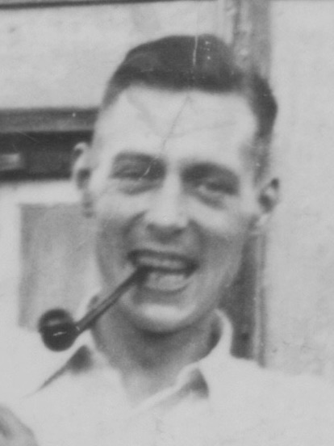
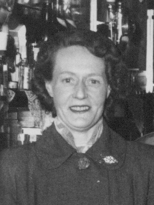
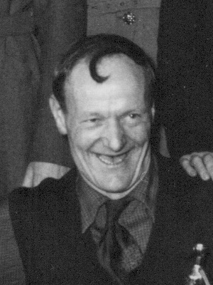
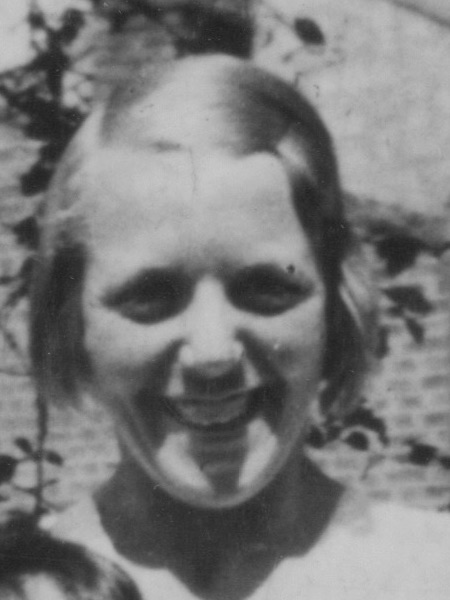
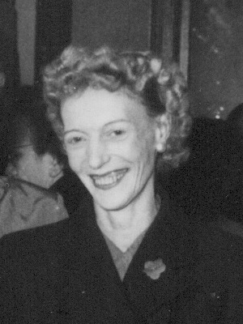
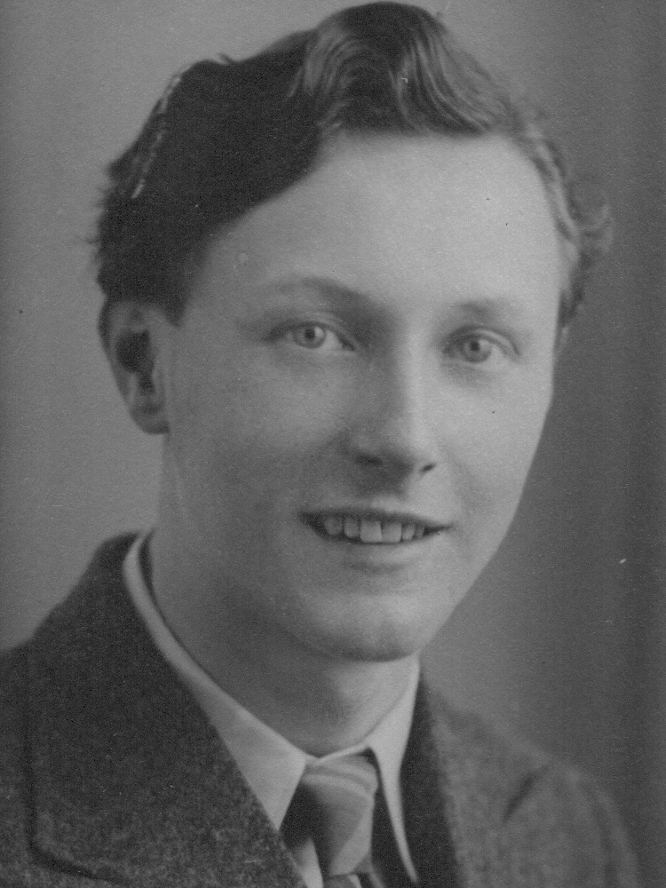
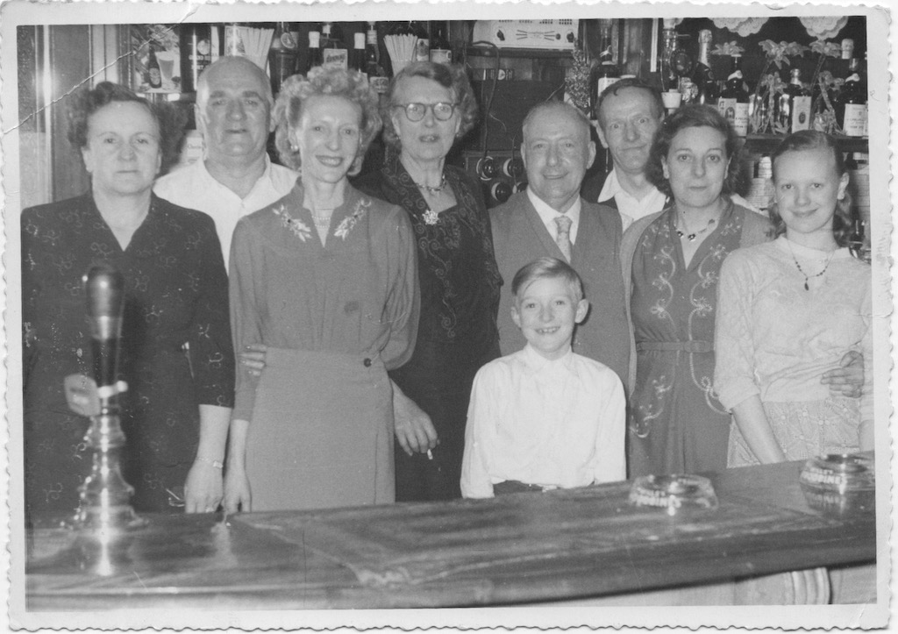
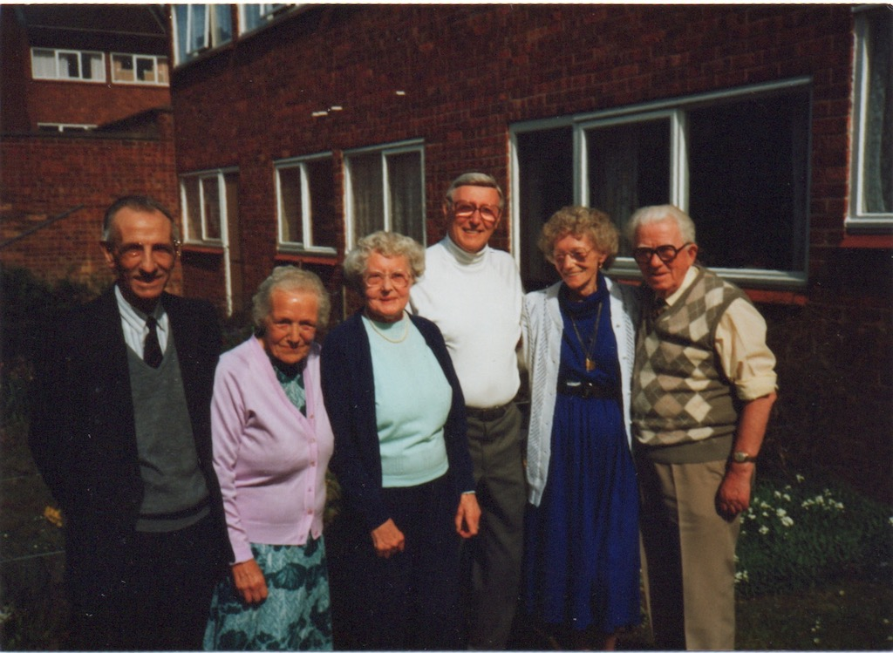

In all there were seven children in the James household. However, Lucy's sister died and so the remaining Travers sisters took in her children. So Doris became part of the family.
|  |  |  |  |  |  |
 |
| Bill | Lucy | Dick | Lil | Elsie | Jim | Mick |
Bill was the eldest son and so was named after his father. Bill was the studious type, going to evening classes and worked for London Transport, starting as an apprentice and finishing as the depot manager. He married Ethel, but they didn't have any children.
Lucy and Dick (Richard Albert) were twins, but Lucy, being the eldest girl was named after her mother. Lucy married Charles Innes and they had a son, Anthony. They lived further along Philip Lane, in an upstairs flat. Anthony became a doctor, married a nurse (Jill) and had two sons. He spent most of his working life in Norwich, but then retired to Snape in Suffork.
Dick married Flossy and they had a daughter Eileen. The three of them can be seen on the right of this photo. They lived in Shoreditch, East London. Eileen married a policeman, who then joined the army. Unfortunately Eileen died of cancer while still quite young. There is a cine film of Eileen's wedding.
Elsie, third from left, married Ron(?) Hill, who had been in the army with Jim, and had a son, Martin, who is in the middle of the photo. Elsie divorced and later married Charley Baker. We don't know the two people on the left.
The story goes that Lil wanted to spend Christmas lunch at her boyfriend's house. However, her father said that if she went, she couldn't come back. So she left and never returned. In the colour photo we can see Bert (Lil's husband), Lil, Lucy, Robert (Lil's son), Elsie and Charles (Lucy's husband).
Then, of course, there was Jim and his younger brother (by about five years) Mick. Actually Mick's real name is Cyril Leonard, but when he was a baby someone said that he looked like Micky Mouse, and the name stuck. Mick married Joan and they had two sons, Gary and David.
In this photo of Jim and Mick, Mick is about four.
In these notes, Jim describes his family.